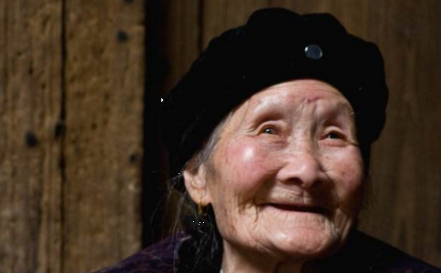

奶奶一边说，一边把手上的戒指退下来递给我，“收好这只戒指吧，足金的哦，肚子饿的时候，都可以换两餐饭来吃。”
从前没有冰箱的时候，家家户户都用一个碗橱。碗橱靠墙的那一面是木头的，其他的三面则是纱窗，这样空气可以
我们家里，一桌子的嘴，大多都是刁的。从前家里钱不大够用的时候，爸爸也总是会在每个星期天理好一个奶油包头以后到咖啡馆里去坐一坐的。讲这种派头的人，当然是不吃剩菜的。
妈妈是来自一个大
至于我呢，有一年爸爸妈妈送我到外地的姨妈家里去，可是我面对一桌生葱和黑乎乎的酱就是不肯动筷，还要摆出一副受了委屈的样子来。表哥看不下去，说我“一看就是一个刁小三”。
只有哥哥好一些，他是个不甚挑剔的人，旧的衣服改一改，他也不介意穿，吃剩菜他也肯的。只是一个正在长身体的男孩，总是要多吃一点好东西的。在这样的家里，吃剩菜的就只有奶奶了。
那时一点可怜的食油是要凭票才能买的。因为大陆的油不够用，姨妈从外国回来的时候，除了送其他的东西，还特地接济每家一瓶油。没有用油炒过的菜，隔了一夜，实在难以下咽。我们的筷子，总是掠过盛着隔夜菜的那个碗，只顾伸去挟新鲜刚煮的菜。而刚刚从厨房里煮完一餐出来的奶奶，将就着剩菜，慢慢就吃完一碗饭了。
她吃得很安静，没有我们偶尔吃一次隔夜菜就好像受难似的愁眉苦脸，以至于我以为奶奶煮完饭后吃剩菜是她分内的事情。
属于奶奶分内的事情好像不止这一件。没有冰箱的日子，每天都要去买菜。隆冬腊月的早晨，在妈妈的千呼万唤之下，我才肯从温暖的被窝里伸出一个头，外面的天还不曾亮透呢，奶奶早已经买菜回来了，穿着那件我恨死了的旧棉袄。
我恨那件深蓝色的旧棉袄，是有缘由的。有时奶奶买菜回来就急着送我去上学，我嫌那件棉袄太难看了，一定要奶奶换了才肯让她送我去。老师家访的时候，家人把这件事给我揭发了。老师就在班上批评我，说我功课虽然好，可是思想不够好。
我不承认自己思想不好，只会去恨奶奶和那件旧棉袄。可是恨了两天我就不恨了。因为奶奶的菜不仅做得好吃，而且做的时候很好玩，像是游戏似的。我在边上看得着了迷，就忘了自己还在
奶奶把大块的猪肉切成丁，用佐料拌匀了来做香肠。她在香肠衣的口上放一只漏斗，漏斗里面放满了肉丁，把肉塞到肠衣里面去了。一根肠衣塞满的时候，就用粗线把两头扎紧了，再找来一根针，在香肠上“噗噗”地刺出许多小孔。然后把香肠吊在阳台太阳晒不到的地方，说香肠是要这样风干的。
过了几个
其实奶奶也不是不懂得吃好东西的人。夏天里她脱下平常煮饭穿的旧衣服，换上一套青黑色的香衬衫，衣襟上塞一条手帕，脚上换一双黑色的缎子鞋，这就带我上街去。有时候我们去凯司令吃奶油蛋糕，有时候我们也去泰昌吃冰激淋。
奶奶买了花给我别在衣服的扣子上，一下子我们两个人就变香了。奶奶的心情更加好起来，跟我说从前的事：“爷爷常带我去吃大菜，我连大菜里的铁扒鸡都会做！”
我从来没有吃过铁扒鸡，很想知道那鸡怎么好吃法。可是爷爷一早就不在了，生伤寒死的。奶奶24岁就守了寡，也没有动再嫁的念头。爷爷留下的钱用完的时候，奶奶也出去工作过。现在奶奶老了，没有了工作。我想，如果奶奶也没有爸爸的话，是不是就要像那个老太太一样大热天里到外面去摆摊卖花了呢。走完那面高高的篱笆墙的时候，我回过头去望一望那个坐在地上的老太太，心里莫名担忧起来，把奶奶的手攥得更紧些了。
奶奶没有工作，我不知道她买奶油蛋糕和冰激凌的钱是从哪里来的。我听妈妈说，奶奶当年办的是退职，不是退休。大人说退职就是一次性地拿一笔钱，退休就是每个月可以拿退休金。在妈妈的解释里，仿佛我们家的钱不够用是跟奶奶选择了退职而不是退休有关联的。
我从不随便开口问大人要钱，因为我怕被拒绝的难堪，可是难堪的事情到底还是发生了。
奶奶大概真的用光了全部的钱，我听见她在那里问爸爸要每个月的零用钱。爸爸支吾着不肯给，说去问妈妈要；妈妈也不给，说去问自己的儿子要吧。三个大人就这样一直僵持到夜里。
那天夜里下雨了，我躺在床上睡不着，听着窗外淅淅沥沥的雨声。听到半夜时，野猫出来了。它们在弄堂里玩着玩着就打起架来，一阵狂乱的撕咬声以后，受伤的野猫号哭起来，哭声非常凄惨。我躲在被子里紧张地竖起耳朵，再三确认那是野猫的哭声而不是奶奶的，才把悬着的心放下来。可是眼泪还是流出来了，顺着脸颊一直滚到耳朵里面去。
“快快长大就好了。”我跟自己说：“长大就可以赚钱给奶奶零用了。”
我们吃着奶奶做的新鲜好吃的菜长大了，奶奶吃着我们吃剩下的隔夜菜变老了。哥哥开始工作的时候，马上给了奶奶零用钱。奶奶拿了钱就即刻去烟纸店买香烛来祭拜爷爷，回家时却发现钱找错了。好多年没有去买过东西，香烛的价钱跟从前已经不一样，连钱的样子也变了。
那天哥哥把老糊涂的奶奶不认得钱的事当成笑话讲给我听，我笑得眼泪也掉了出来。用手去擦眼泪的时候，却发现那些眼泪怎么擦来擦去擦不干的。
“爸妈其实也不是没钞票。”我问他：“为啥就不肯给奶奶一点零用呢？”哥哥不笑了，长久沉默着。
哥哥那时的经济其实也是紧的，工资不多，又要筹办婚事。爸爸把单位里分的另一套房子给了他，其他的事情就全部让他自己操办。他勉强办齐了结婚必备的东西，却再也不够钱给新娘买首饰了。
婚礼的酒席上，奶奶颤颤巍巍地站起来，把新娘子叫过去，然后哆哆嗦嗦地从自己的脖子上摘下一条又粗又长的金项链来给孙媳妇戴上。那个沉甸甸的金坠子把一桌子的人都吓了一跳，不知道天天吃隔夜菜的奶奶还藏着这样的好东西，我们从来没有听她提起过呀？
等到我要出国的时候，奶奶老得更糊涂了。她看我一天到晚忙进忙出，也不知道我是在干什么。及至我买定两只大箱子，把自己的一家一当都装进去的那一刻，奶奶才发觉我要出远门了。
“阿寒，你要去哪里啊？“
“我要出国去读书啊！”我对着她的耳朵大声说。
“什么，你大学都毕业了，还要去读书？”奶奶抬起头来看看我，恍恍地笑着，“你骗我啦，你是想出去找男孩，是不是啊？”
“不是找男孩，”我笑着对着她的耳朵更大声地叫，“我是出国去读研究生啊！”
“奶奶，”哥哥笑嘻嘻地插话进来，他也对着奶奶的耳朵大叫，“阿寒是回香港去摆地摊卖衣服啊！”然后他回头跟我说，“不要去跟奶奶讲啥‘研究生’，她老了，搞不懂。”
“是回香港吗？你们这些人又来骗我了。”奶奶将信将疑，抬起一张因为年老而变得像孩童一样天真的脸来打量大笑着的我们俩。
“是什么都好啦，”奶奶一边说，一边把手上的戒指退下来递给我，“收好这只戒指吧，足金的哦，肚子饿的时候，都可以换两餐饭来吃。”
我是手心里握着奶奶从手指上摘下来的戒指上出租车的，那只戒指上还留着奶奶的体温。可是等我赚到钱的时候，奶奶已经不需要零用钱，连医生也不需要了，我只来得及给奶奶买了大红的寿衣。
那一年我回国的第二天，奶奶就终老了。没有什么可抢救的，身体里所有的机器都老得坏掉，全身的血管都爆裂了。
现在的家里，只要不要求吃鱼翅和熊掌，钱是不会不够用的。冰箱当然是必备的东西，然而剩菜也还是常有的。饭桌上，我把新鲜烧好的菜推到对面去，把剩菜放在自己的面前。看到对面的人吃得很香的样子，我的心里满是欣慰。
我想起小时候的饭桌来，那时奶奶吃着隔夜菜，她心里有的，原来不是苦啊。这样想着，沉重了许多年的心，仿佛有些释然，可是眼泪还是涌上来了。
我放下筷子站起来，假装去看看外面的天气。天空里无声地下着密密的鹅毛大雪，什么时候外面的世界已经盖上了一层皑皑的白雪。我久久看着门前的那条小路，白色小路弯弯地一直延伸到天边去了。泪眼蒙眬里，我怎么分明看见奶奶从小路的那头走过来，她穿着那件蓝色的旧棉袄，两手挽着沉沉的菜篮子，慢慢地走回家里来……
奶奶，你是不是来告诉我，那时你没有工作也没有钱，那是你唯一可以用来爱我们的方式。我现在知道，知道了。